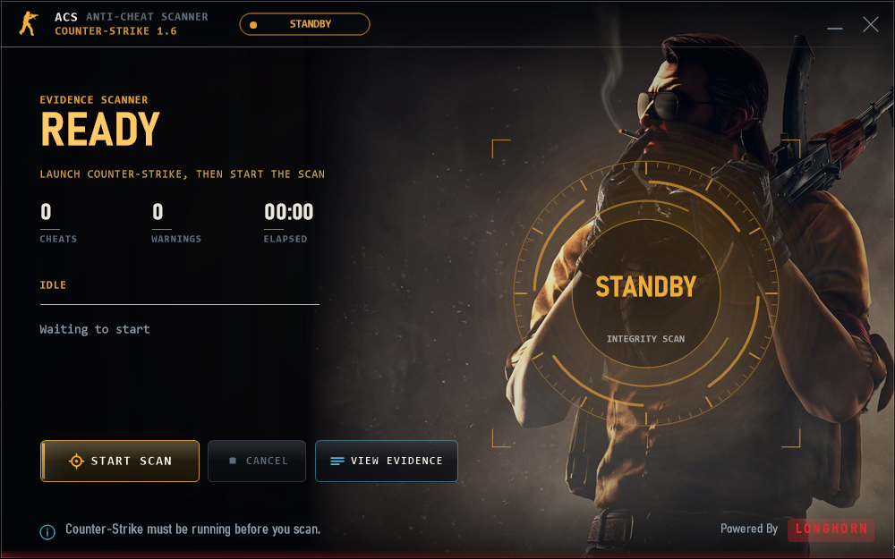

Read before you scan.
Before each scan, ACS shows the configured server and explains access to processes, modules, drivers, game files, memory evidence and activity traces.
COUNTER-STRIKE 1.6 / GOLDSRC
An on-demand Windows scanner for game integrity, suspicious scripts and client evidence. See exactly what it accesses before you start a scan.
Windows 10/11 · 32-bit and 64-bit · One executable · Operator configuration required

01 / RELEASE DETAILS
ACS 1.0.0 is a single portable executable. The source remains private. The checksum below identifies this exact file; it does not certify that software is safe.
3.9 MB · Windows 10/11 · 32-bit and 64-bit
02 / YOUR DATA, YOUR DECISION
Before each scan, ACS shows the configured server and explains access to processes, modules, drivers, game files, memory evidence and activity traces.
Reports can contain player and device identifiers, paths, hashes, signature status, memory strings, game/server information, findings and timing.
The report uploads automatically when the scan finishes. Choose Cancel on the screen before scanning if you do not want it sent — there is no second prompt.
Records may remain until the operator deletes them. Ask about private access, retention and deletion before scanning. The executable includes no endpoint or API secret.
Read the complete data-access notice →03 / EVIDENCE, WITH LIMITS
Compare the downloaded executable with the published checksum, and check its Windows signature. This release is unsigned.
Get-FileHash .\ACS-Scanner-1.0.0-windows.exe
Get-AuthenticodeSignature .\ACS-Scanner-1.0.0-windows.exeNo independent audit, verified antivirus verdict, or real-world detection-rate benchmark is claimed. Tests exercise selected behaviors; they are not a malware certification. ACS does not claim to detect every cheat or prevent every bypass.
Keep Windows and antivirus protections enabled. Review unexpected warnings and use software only when you trust its source and operator.
Report a security concern →04 / COMMON QUESTIONS
The maintainer distributes compiled releases while keeping detection implementation private. Public documentation describes data access and limitations. Private source does not prevent reverse engineering, and is not proof of safety.
No. ACS is a single on-demand executable. It installs no background service or driver. Continuous server gameplay analysis is a separate deployment.
No. A scan is a bounded observation. Unknown cheats, unavailable inspection surfaces and evasion can affect results. Warnings and detections need review before enforcement.
Ask your game-server operator for their acp-settings.json and place it next to the executable or in %APPDATA%\LongHorn ACS\. GitHub Pages hosts this information site, not the report API.
No. Counter-Strike and other product names identify compatibility targets. Hosting on GitHub and bundling Microsoft runtime files do not imply endorsement.